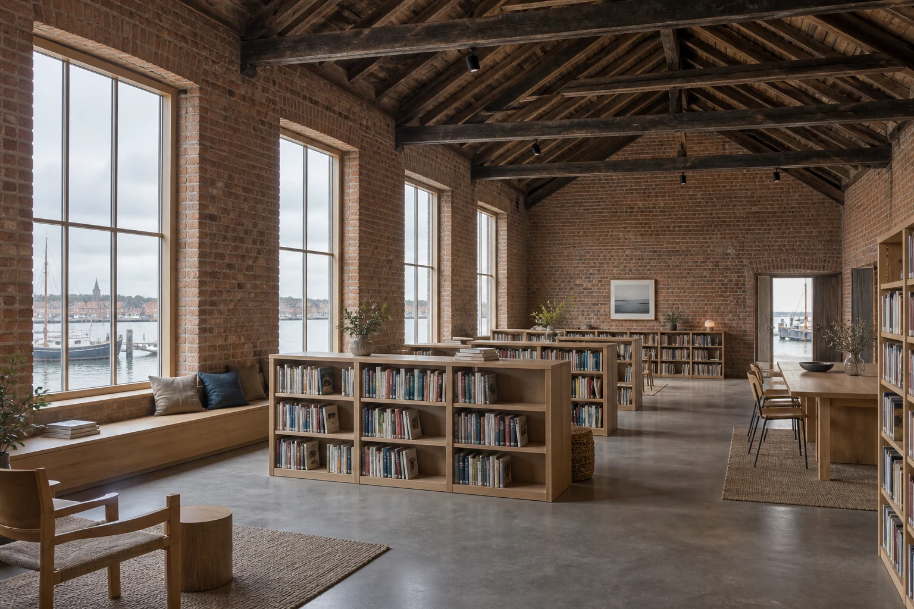

Adaptive reuse / Faaborg / 2024
Harbour Reading Room
A shared room, held within an old shell.

- Place
- Faaborg, Denmark
- Design year
- 2024
- Illustrative area
- 220 m²
- Approach
- Adaptive reuse
- Status
- Fictional design study
The starting question
A shared room, held within an old shell.
A neighbourhood group wanted a place for reading, small conversations and an occasional shared event. The proposal begins with the generous room already inside a former boat store, rather than dividing it into smaller destinations.
The long brick enclosure and pitched timber roof provide a recognisable common space. The design question is how to bring a quieter scale to its edges without losing that shared volume.
Keep the room intact
Low freestanding shelves hold books and form a quiet edge. They stop well below the roof so the original volume remains legible.
Give the window a purpose
A continuous oak bench turns the daylight edge into somewhere to read alone or sit beside another person.
Make room for change
A shared table and movable chairs leave the centre adaptable for reading groups. The furniture does the organising; the shell does not need a new corridor.
An organising idea
The plan explains
the priorities.
A quiet edge and an open middle. New furniture sits within the existing enclosure.
This diagram illustrates relationships only. It is not a measured survey, technical drawing or access assessment.
Material and responsibility
A small family of moves.
- Retained
- Red-brick shell and timber roof structure
- Introduced
- Oak shelving, window bench and reading furniture
- To resolve
- Condition surveys, environmental services and the operational brief
Design scope: Spatial concept, furniture strategy and design coordination brief.
A fictional spatial design study. Existing conditions, structural capacity, access requirements and consent have not been surveyed or verified.
What is your
starting question?
Use this project as a reference for a conversation. Your place, scope and priorities will be different.
Prepare a conversation